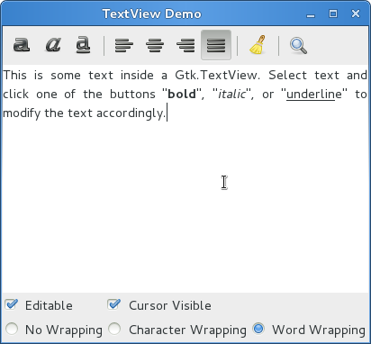

Multiline Text Editor¶
Gtk.TextView 控件可以用来显示和编辑大量的格式化的文本。与 Gtk.TreeView
类似，其也有一个模型/视图的设计， Gtk.TextBuffer 就是代表正在被编辑的文本
的模型。模型也允许两个或更多个的 Gtk.TextView 共享同一个 Gtk.TextBuffer ，
并允许这些文本有不同的显示。或者你也可以在同一个 Gtk.TextView 的不同时间显示
不同 text buffer 的文本。
视图（The View）¶
Gtk.TextView 就是用户可以添加、编辑或者删除文本的前端，其通常用来编辑
多行的文本。当创建一个 Gtk.TextView 时其自动包含一个默认的 Gtk.TextBuffer ，
你可以通过 Gtk.TextView.get_buffer() 来获取。
默认情况下，文本可以在 Gtk.TextView 中被添加、编辑与删除，你可以通过调用
Gtk.TextView.set_editable() 来禁止编辑。如果文本不可被编辑，你也通常想要使用
Gtk.TextView.set_cursor_visible() 来隐藏文本光标。在有些时候可以通过
Gtk.TextView.set_justification() 来设置文本的对齐方式很有用，文本可以显示为
左对齐(Gtk.Justification.LEFT)，右对齐(attr:Gtk.Justification.RIGHT)，或者
中间对齐(attr:Gtk.Justification.CENTER)，或者占满整行(attr:Gtk.Justification.FILL)。
Gtk.TextView 的另一项默认设置是长行会一直水平延伸知道遇到一个断行。调用
Gtk.TextView.set_wrap_mode() 可以使文本自动换行一避免文本跑出屏幕边缘。
TextView 对象¶
-
class
Gtk.TextView¶ 创建一个新的
Gtk.TextView并关联一个空的Gtk.TextBuffer。-
get_buffer()¶ 返回 text view 正在显示的
Gtk.TextBuffer。
-
set_editable(editable)¶ 设置
Gtk.TextView的文本是否可编辑。
-
set_cursor_visible(visible)¶ 设置现在光标的位置是否显示。不可编辑文本不应该有一个可见的光标，因此你 可能会关闭光标的显示。
-
set_justification(justification)¶ 设置文本的额默认对齐方式。
justification 的值可以是下列之一：
Gtk.Justification.LEFT: 文本左对齐。Gtk.Justification.RIGHT: 文本右对齐。Gtk.Justification.CENTER: 文本居中对齐。Gtk.Justification.FILL: 文本占满整行。
-
模型（The Model）¶
Gtk.TextBuffer 是 Gtk.TextView 控件的核心，用来保存
Gtk.TextView 显示的文本。设置和获取文本内容可以他用过
Gtk.TextBuffer.set_text() 和 Gtk.TextBuffer.get_text 。
但是绝大多数的文本操作是通过 iterators 来完成的，即 Gtk.TextIter 。
iterator迭代器代表了文本buffer中两个字符之间的一个位置。迭代器并不是一直有效的，
一旦文本内容被修改并影响了buffer的内容，所有的迭代去就都无效了。
正因为此，迭代器不能用来在buffer修改前后保留位置。要保存一个位置，使用 Gtk.TextMark 。
一个text buffer包含两个内建的标记，”insert” 标记光标的位置，”selection_bound” 标记，
可以通过 Gtk.TextBuffer.get_insert() 和 Gtk.TextBuffer.get_selection_bound()
来获得他们。默认 Gtk.TextMark 的位置是不显示的，可以通过
Gtk.TextMark.set_visible() 设置。
有很多方法可以获取 Gtk.TextIter 。例如， Gtk.TextBuffer.get_start_iter()
返回只想text buffer地一个位置的迭代器，而 Gtk.TextBuffer.get_end_iter() 则返回
最后一个有效字符处的迭代器。获取选中文本的边界可以通过 Gtk.TextBuffer.get_selection_bounds() 。
要在一个指定位置插入文本请使用 Gtk.TextBuffer.insert() 。另一个非常有用的方法
Gtk.TextBuffer.insert_at_cursor() 可以在光标指向的位置插入文本。要删除一部分
文本请使用 Gtk.TextBuffer.delete() 。
另外，Gtk.TextIter 可以通过 Gtk.TextIter.forward_search() 和
Gtk.TextIter.backward_search() 用来搜索文本。根据需求可以使用buffer开始和结束
的iters来进行向前/后的搜索。
TextBuffer 对象¶
-
class
Gtk.TextBuffer¶ -
set_text(text[, length])¶ 删除buffer当前的内容，并插入 length 个 text 中的字符。 如果 length 为-1或忽略， text 全部被插入。
-
get_text(start_iter, end_iter, include_hidden_chars)¶ 返回从 start_iter (包含)和 end_iter (不含)之间的文本，如果 include_hidden_chars 为
False，则不包含未显示的文本。
-
get_insert()¶ 返回代表当前光标位置(插入点)的
Gtk.TextMark。
-
get_selection_bound()¶ 返回代表选中区域边界的
Gtk.TextMark。
-
create_mark(mark_name, where[, left_gravity])¶ 在
Gtk.TextIterwhere 处创建一个Gtk.TextMark。 如果 mark_name 为None，则mark是匿名的。如果一个标记有left_gravity， 文本被插入到当前位置后，标记会移动到新插入文本的左边。如果标记为right_gravity (left_gravity 为False)，标记会移动到新插入文本的右边。因此标准的 从左到右的光标为right gravity的标记（当你输入的时候，光标会出现在你输入文本的右边）。如果 left_gravity 被忽略，默认为
False。
-
get_mark(mark_name)¶ 返回buffer中名字为mark_name的 :class`Gtk.TextMark` ，如果不存在则返回
None。
-
get_start_iter()¶ 返回指向buffer地一个位置的
Gtk.TextIter。
-
get_end_iter()¶ 返回只想buffer最后一个有效字符的
Gtk.TextIter。
-
get_selection_bounds()¶ 返回包含两个
Gtk.TextItertuple对象，分别指向选中的第一个字符和 后不第一个未选中的字符。如果没有文本被选中则返回空的tuple。
-
insert(text_iter, text[, length])¶ 在 text_iter 处插入 text 的 length 个字符。如果 length 为-1或忽略， 全部的 text 会被插入。
-
delete(start_iter, end_iter)¶ 删除 start_iter 与 end_iter 之间的文本。
-
create_tag(tag_name, **kwargs)¶ 创建一个tag并添加到buffer的tag表中。
如果 tag_name 为
None，则tag是匿名的，否则tag_name不能与tag表中 已经存在的tag重名。kwargs 为任意数量的键值对，代表了tag的属性列表，可以通过
tag.set_property来设置。
-
apply_tag(tag, start_iter, end_iter)¶ 应用 tag 到给定范围的文本。
-
remove_tag(tag, start_iter, end_iter)¶ 删除给定范围内所有的 tag 。
删除给定范围内所有的tag。
-
-
class
Gtk.TextIter¶ -
forward_search(needle, flags, limit)¶ 向前搜索 needle 。搜索在达到limit后不会再继续。
flags 可以为下列之一，或者他们的组合（通过或操作符
|）。0: 精确匹配
Gtk.TextSearchFlags.VISIBLE_ONLY: 匹配可能在 needle 中间穿插 有不可见字符，即 needle 为匹配到的字符串的可能不连续的子序列。Gtk.TextSearchFlags.TEXT_ONLY: 匹配可能包含图像pixbuf或者子空间 混合在匹配到的范围内。Gtk.TextSearchFlags.CASE_INSENSITIVE: 匹配忽略大小写。
返回包含指向开始与匹配到的文本后边的
Gtk.TextIter的元组。如果 没有找到，则返回None。
-
backward_search(needle, flags, limit)¶ 与
forward_search()相同，但是向后搜索。
-
Tags¶
buffer内的文本可以通过tag来标记。tag就是一个可以应用到一个文本范围的属性。例如，
“bold” tag使应用到文本加粗。然而tag的概念比其更多，tag不一定会影响外观，也可能会
影响鼠标和按键的行为，”lock” 可以锁定一段文本使用户不能编辑，或者数不尽的其他的事情。
tag由 Gtk.TextTag 对象代表。一个 Gtk.TextTag 可以应用到任何数量
的文本范围，任何数量的buffer。
所有的tag都存储在 Gtk.TextTagTable 中。一个tab表定义了一系列的tag并可以一起使用。
每一个buffer都有一个与之关联的tag表，只有表中的tag才可以应用到buffer。但一个tag表可以
在多个buffer间共享。
要指定buffer内的一部分为本应该有特定的格式，你必须先定义该格式的tag，然后使用
Gtk.TextBuffer.create_tag() 和 Gtk.TextBuffer.apply_tag() 来将tag应用到文本区域。
tag = textbuffer.create_tag("orange_bg", background="orange")
textbuffer.apply_tag(tag, start_iter, end_iter)
以下列出一些应用到文本的通常使用的风格：
背景颜色(“foreground” property)
前景颜色(“background” property)
下划线(“underline” property)
粗体(“weight” property)
斜提(“style” property)
删除线(“strikethrough” property)
对齐(“justification” property)
大小(“size” and “size-points” properties)
自动换行(“wrap-mode” property)
你也可以使用 Gtk.TextBuffer.remove_tag() 删除某个特定的tag，或者使用
Gtk.TextBuffer.remove_all_tags() 删除给的区域所有的tag。
Example¶
1 2 3 4 5 6 7 8 9 10 11 12 13 14 15 16 17 18 19 20 21 22 23 24 25 26 27 28 29 30 31 32 33 34 35 36 37 38 39 40 41 42 43 44 45 46 47 48 49 50 51 52 53 54 55 56 57 58 59 60 61 62 63 64 65 66 67 68 69 70 71 72 73 74 75 76 77 78 79 80 81 82 83 84 85 86 87 88 89 90 91 92 93 94 95 96 97 98 99 100 101 102 103 104 105 106 107 108 109 110 111 112 113 114 115 116 117 118 119 120 121 122 123 124 125 126 127 128 129 130 131 132 133 134 135 136 137 138 139 140 141 142 143 144 145 146 147 148 149 150 151 152 153 154 155 156 157 158 159 160 161 162 163 164 165 166 167 168 169 170 171 172 173 174 175 176 177 178 179 180 181 182 183 184 185 186 187 188 189 190 191 | from gi.repository import Gtk, Pango
class SearchDialog(Gtk.Dialog):
def __init__(self, parent):
Gtk.Dialog.__init__(self, 'Search', parent,
Gtk.DialogFlags.MODAL, buttons=(
Gtk.STOCK_FIND, Gtk.ResponseType.OK,
Gtk.STOCK_CANCEL, Gtk.ResponseType.CANCEL))
box = self.get_content_area()
label = Gtk.Label('Insert text you want to search for:')
box.add(label)
self.entry = Gtk.Entry()
box.add(self.entry)
self.show_all()
class TextViewWindow(Gtk.Window):
def __init__(self):
Gtk.Window.__init__(self, title='TextView Demo')
self.set_default_size(-1, 350)
self.grid = Gtk.Grid()
self.add(self.grid)
self.create_textview()
self.create_toolbar()
self.create_buttons()
def create_toolbar(self):
toolbar = Gtk.Toolbar()
self.grid.attach(toolbar, 0, 0, 3, 1)
button_bold = Gtk.ToolButton.new_from_stock(Gtk.STOCK_BOLD)
toolbar.insert(button_bold, 0)
button_italic = Gtk.ToolButton.new_from_stock(Gtk.STOCK_ITALIC)
toolbar.insert(button_italic, 1)
button_underline = Gtk.ToolButton.new_from_stock(Gtk.STOCK_UNDERLINE)
toolbar.insert(button_underline, 2)
button_bold.connect('clicked', self.on_button_clicked, self.tag_bold)
button_italic.connect('clicked', self.on_button_clicked, self.tag_italic)
button_underline.connect('clicked', self.on_button_clicked, self.tag_underline)
toolbar.insert(Gtk.SeparatorToolItem(), 3)
radio_justifyleft = Gtk.RadioToolButton()
radio_justifyleft.set_stock_id(Gtk.STOCK_JUSTIFY_LEFT)
toolbar.insert(radio_justifyleft, 4)
radio_justifycenter = Gtk.RadioToolButton.new_with_stock_from_widget(
radio_justifyleft, Gtk.STOCK_JUSTIFY_CENTER)
toolbar.insert(radio_justifycenter, 5)
radio_justifyright = Gtk.RadioToolButton.new_with_stock_from_widget(
radio_justifyleft, Gtk.STOCK_JUSTIFY_RIGHT)
toolbar.insert(radio_justifyright, 6)
radio_justifyfill = Gtk.RadioToolButton.new_with_stock_from_widget(
radio_justifyleft, Gtk.STOCK_JUSTIFY_FILL)
toolbar.insert(radio_justifyfill, 7)
radio_justifyleft.connect('toggled', self.on_justify_toggled,
Gtk.Justification.LEFT)
radio_justifycenter.connect('toggled', self.on_justify_toggled,
Gtk.Justification.CENTER)
radio_justifyright.connect('toggled', self.on_justify_toggled,
Gtk.Justification.RIGHT)
radio_justifyfill.connect('toggled', self.on_justify_toggled,
Gtk.Justification.FILL)
toolbar.insert(Gtk.SeparatorToolItem(), 8)
button_clear = Gtk.ToolButton.new_from_stock(Gtk.STOCK_CLEAR)
button_clear.connect('clicked', self.on_clear_clicked)
toolbar.insert(button_clear, 9)
toolbar.insert(Gtk.SeparatorToolItem(), 10)
button_search = Gtk.ToolButton.new_from_stock(Gtk.STOCK_FIND)
button_search.connect('clicked', self.on_search_clicked)
toolbar.insert(button_search, 11)
def create_textview(self):
scrolledwindow = Gtk.ScrolledWindow()
scrolledwindow.set_hexpand(True)
scrolledwindow.set_vexpand(True)
self.grid.attach(scrolledwindow, 0, 1, 3, 1)
self.textview = Gtk.TextView()
self.textbuffer = self.textview.get_buffer()
self.textbuffer.set_text('This is some text inside a Gtk.TextView. '
+ 'Select text and click one of the buttons "bold", "italic", '
+ 'or "underline" to modify the text accordingly.')
scrolledwindow.add(self.textview)
self.tag_bold = self.textbuffer.create_tag('bold',
weight=Pango.Weight.BOLD)
self.tag_italic = self.textbuffer.create_tag('italic',
style=Pango.Style.ITALIC)
self.tag_underline = self.textbuffer.create_tag('underline',
underline=Pango.Underline.SINGLE)
self.tag_found = self.textbuffer.create_tag('found',
background='yellow')
def create_buttons(self):
check_editable = Gtk.CheckButton('Editable')
check_editable.set_active(True)
check_editable.connect('toggled', self.on_editable_toggled)
self.grid.attach(check_editable, 0, 2, 1, 1)
check_cursor = Gtk.CheckButton('Cursor Visible')
check_cursor.set_active(True)
check_cursor.connect('toggled', self.on_cursor_toggled)
self.grid.attach_next_to(check_cursor, check_editable,
Gtk.PositionType.RIGHT, 1, 1)
radio_wrapnone = Gtk.RadioButton.new_with_label_from_widget(None,
'No Wrapping')
self.grid.attach(radio_wrapnone, 0, 3, 1, 1)
radio_wrapchar = Gtk.RadioButton.new_with_label_from_widget(
radio_wrapnone,'Character Wrapping')
self.grid.attach_next_to(radio_wrapchar, radio_wrapnone,
Gtk.PositionType.RIGHT, 1, 1)
radio_wrapword = Gtk.RadioButton.new_with_label_from_widget(
radio_wrapnone, 'Word Wrapping')
self.grid.attach_next_to(radio_wrapword, radio_wrapchar,
Gtk.PositionType.RIGHT, 1, 1)
radio_wrapnone.connect('toggled', self.on_wrap_toggled, Gtk.WrapMode.NONE)
radio_wrapchar.connect('toggled', self.on_wrap_toggled, Gtk.WrapMode.CHAR)
radio_wrapword.connect('toggled', self.on_wrap_toggled, Gtk.WrapMode.WORD)
def on_button_clicked(self, widget, tag):
bounds = self.textbuffer.get_selection_bounds()
if len(bounds) != 0:
start, end = bounds
self.textbuffer.apply_tag(tag, start, end)
def on_clear_clicked(self, widget):
start = self.textbuffer.get_start_iter()
end = self.textbuffer.get_end_iter()
self.textbuffer.remove_all_tags(start, end)
def on_editable_toggled(self, widget):
self.textview.set_editable(widget.get_active())
def on_cursor_toggled(self, widget):
self.textview.set_cursor_visible(widget.get_active())
def on_wrap_toggled(self, widget, mode):
self.textview.set_wrap_mode(mode)
def on_justify_toggled(self, widget, justification):
self.textview.set_justification(justification)
def on_search_clicked(self, widget):
dialog = SearchDialog(self)
response = dialog.run()
if response == Gtk.ResponseType.OK:
cursor_mark = self.textbuffer.get_insert()
start = self.textbuffer.get_iter_at_mark(cursor_mark)
if start.get_offset() == self.textbuffer.get_char_count():
start = self.textbuffer.get_start_iter()
self.search_and_mark(dialog.entry.get_text(), start)
dialog.destroy()
def search_and_mark(self, text, start):
end = self.textbuffer.get_end_iter()
match = start.forward_search(text, 0, end)
if match != None:
match_start, match_end = match
self.textbuffer.apply_tag(self.tag_found, match_start, match_end)
self.search_and_mark(text, match_end)
win = TextViewWindow()
win.connect('delete-event', Gtk.main_quit)
win.show_all()
Gtk.main()
|